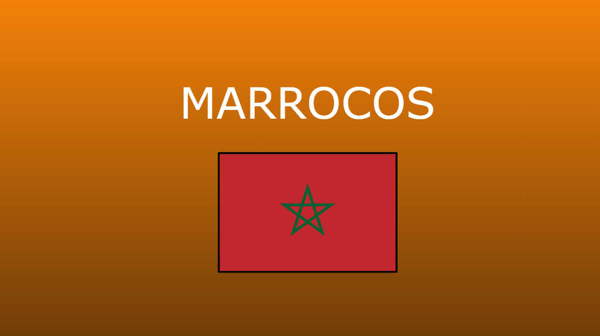

Trabalho em que cada grupo ficou encarregado de escolher uma obra do pré-modernismo(movimento
cultural no Brasil durante o início do século XX). Meu grupo escolheu o livro Canaã. Canaã é um livro de Graça Aranha publicado no
Brasil pela primeira vez em 1902. O romance aborda a imigração alemã no estado do Espírito Santo,
por intermédio do conflito entre dois personagens principais, Milkau e Lentz. Achei a atividade bem interessante pois
tive a experiência de descobrir um movimento muito importante no país, explorando diversos temas culturais do Brasil.
Habilidades Desenvolvidas: H3, H4, H16, H22 e H24

Nesta atividade, após escolher o país Marrocos (nação que que sofreu com o processo de colonização depois da 2ª Revolução Industrial), apresentei o mesmo por meio de fotos e mapas como era antes da colonização, o processo de colonização, as mudanças ocorridas na vida da população ao longo da colonização, o processo de independência e o como é hoje.